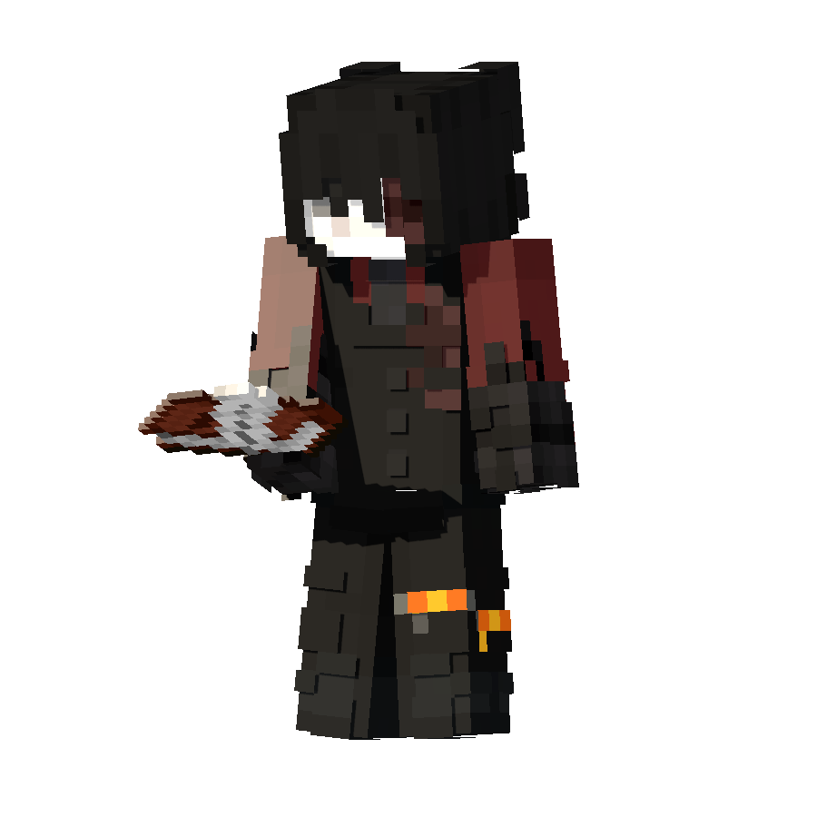
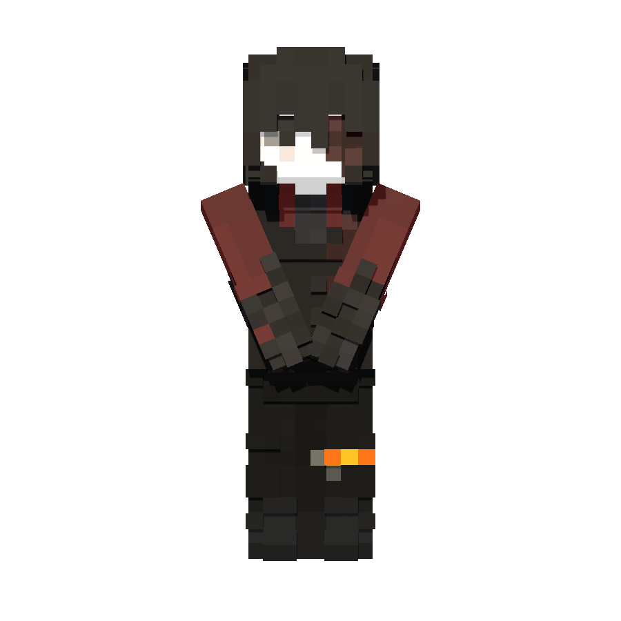
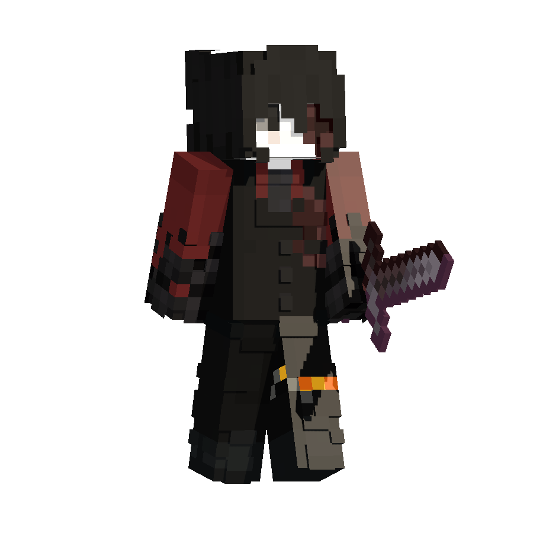
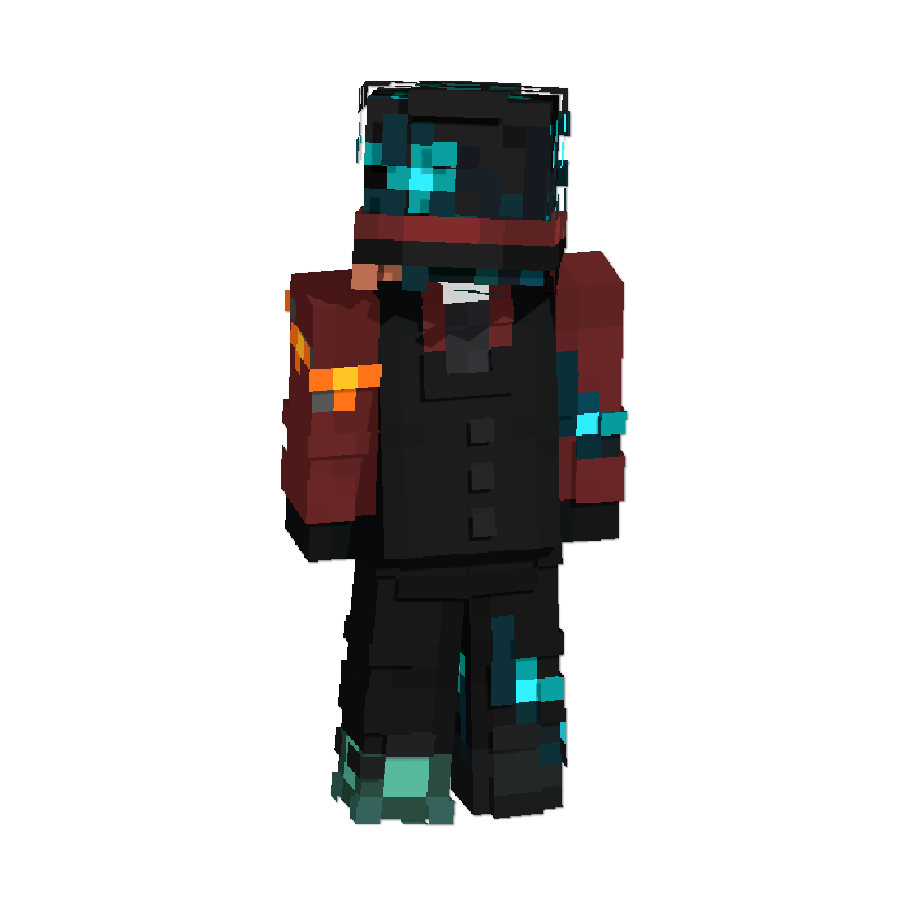

Старт
Как попасть на сервер?
Подайте заявку

Расскажите о себе и своих планах на сервер.
Заявки подаются через
Discord
и рассматриваются вручную.
Дождитесь одобрения

Важно, чтобы новые игроки подходили по настрою и интересам.
Начните игру

После одобрения вы получите доступ к серверу
и сможете начать игру.
Новые измерения
Измерения мира Q-Verse
Это отдельные области мира, существующие параллельно основной
реальности.
Они подчиняются другим правилам генерации, навигации и выживания.
Искажённое измерение
Это версия Верхнего мира с экстремальной генерацией рельефа. Горы, обрывы и перепады высот значительно превышают стандартные значения.
Измерение используется для добычи ресурсов в труднодоступных местах, а также для исследования нестандартной геометрии мира.
Особенности
- Очень высокие горы и глубокие разломы
- Сложная навигация (часто требуется элитры или лестницы)
- Мало ровных участков для строительства
- Отсутствие современных пещерных систем
Риски
- Высокий шанс смерти от падения
- Сложности с перемещением и эвакуацией
Доступ
- Через портал Искажённого измерения
- Активация описана в документации
Нестабильное измерение
Это сохранённая версия мира с генерацией времён Beta. Ландшафт отличается от современного и формируется по старым алгоритмам.
Измерение используется для добычи ресурсов, исследования редких генераций и доступа к аномалиям, отсутствующим в основном мире.
Особенности
- Старая генерация ландшафта (плоские океаны, простые горы)
- Иная структура пещер и руд
- Возможны генерационные аномалии
- Потенциальное появление Далёких Земель
Риски
- Непредсказуемое поведение мира
- Ошибки генерации и нестабильные участки
Доступ
- Через Нестабильный портал
- Активация описана в документации
